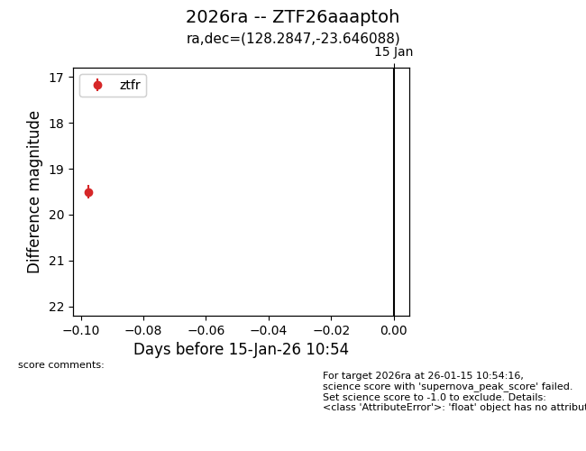
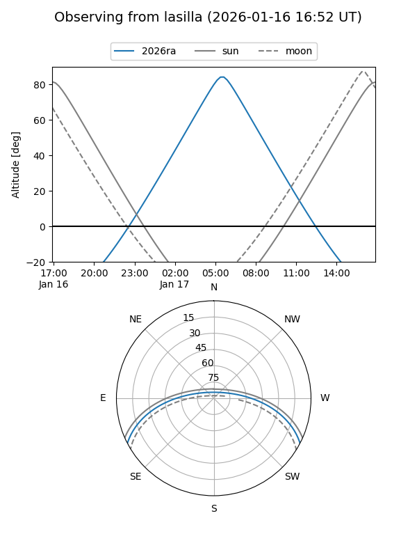
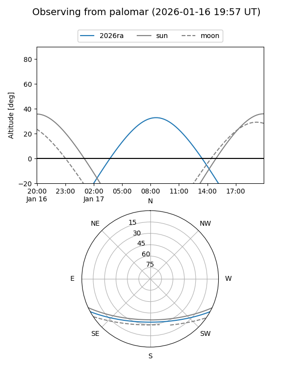
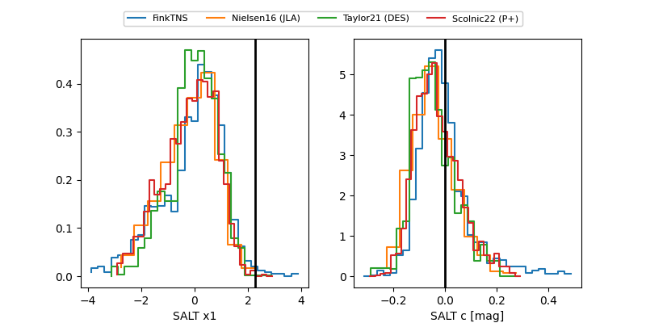

2026ra
Target 2026ra at 2026-01-19 11:05
Aliases and brokers:
FINK: link
Lasair: link
ALeRCE: link
TNS: link
YSE: link
alt names
ZTF26aaaptoh (ztf,fink_ztf)
2026ra (tns,yse)
Coordinates:
equatorial (ra, dec) = 128.2847,-23.64609
equatorial (HMS+DMS) = 08:33:08.32,-23:38:45.92
galactic (l, b) = (245.8845,+9.62103)
Flags:
Photometry:
last ztfg=19.67, ztfr=19.58
1 ztfg, 3 ztfr detections
Lightcurve

Visibility


Additional plots
